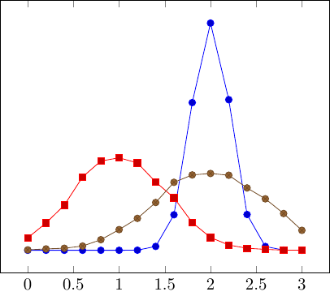
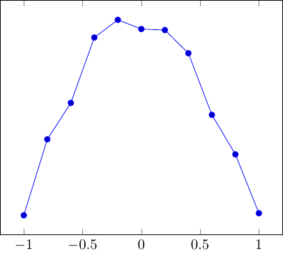

| Copyright | (c) George Ungureanu 2020 |
|---|---|
| License | BSD-style (see the file LICENSE) |
| Maintainer | ugeorge@kth.se |
| Stability | experimental |
| Portability | portable |
| Safe Haskell | Safe |
| Language | Haskell2010 |
ForSyDe.Atom.Prob.Normal
Description
This module defines recipes for normally distributed random variables, i.e. Gaussian distribution. Wraps utilities imported from Data.Random.Normal.
Recipes
Recipe for normally distributed variables.
>>>gen <- getStdGen>>>let x1 = normal 2 (0.2) :: Dist Float>>>let x2 = normal 1 (0.5) :: Dist Float>>>let x3 = normal 2 (0.6) :: Dist Float>>>let hx = map (histogram 0 3 0.2 . samplesn gen 10000) [x1,x2,x3]>>>dumpDat $ prepareL defaultCfg hxDumped hist1, hist2, hist3 in ./fig ["./fig/hist1.dat","./fig/hist2.dat","./fig/hist3.dat"]

normal' :: (Random a, Floating a) => Dist a Source #
Recipe for normally distributed variables using the default parameters, i.e. mean = 0 and standard deviation = 1.
>>>gen <- getStdGen>>>let x = normal' :: Dist Float>>>let hx = histogram (-1) 1 0.2 $ samplesn gen 10000 x>>>dumpDat $ prepare defaultCfg hxDumped hist1 in ./fig ["./fig/hist1.dat"]

Layer
The ForSyDe.Atom.Prob module is re-exported for convenience, so it does not need to be imported explicitly.
module ForSyDe.Atom.Prob